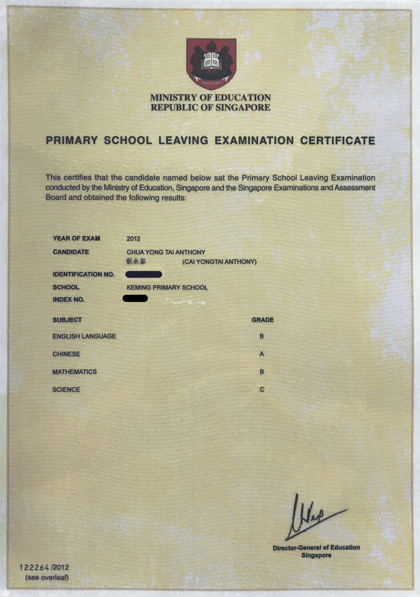
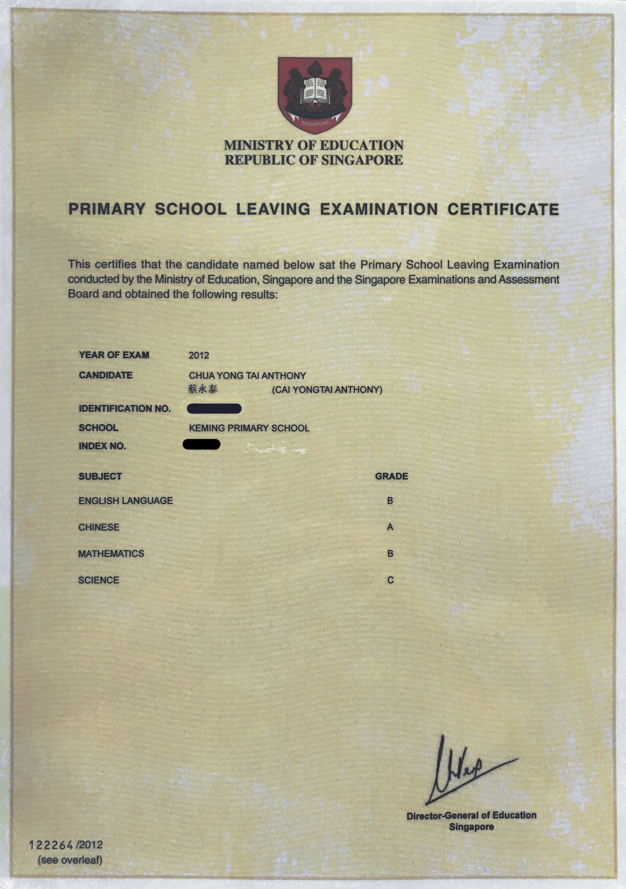

• I went to St Mary Kindergarten as my nursery school
• I attended the Kindergarten in 2004 and graudated in 2006
• I studied in Keming Primary School as my Primary education
• I attended Keming Primary in 2007 and graduated in 2012 after taking the Primary School Leaving Examinations (PSLE)
 

• I went to Kranji Secondary School as my Secondary education
• I entered the school in 2013 and was in the Normal Academic (NA) stream
• I was awarded the Edusave Merit Bursary Award from 2013-2016 while I was still studying in my Secondary school
• I currently have the NYAA(National Youth Achievement Award) Bronze and Silver award
• I graduated from my Secondary schoool in 2016 through the Polytechnic Foundation Programme(PFP) after achieving good results for my GCE N'Levels Examinations

• I came to Singapore PolyTechnic through the Polytechnic Foundation Programme (PFP) in 2017 and I just completed PFP in March earlier this year


• I am currently pursuing my Diploma in Information Technology (DIT) and I spend most my time in the Digital Media and Infocomm Technology (DMIT) school